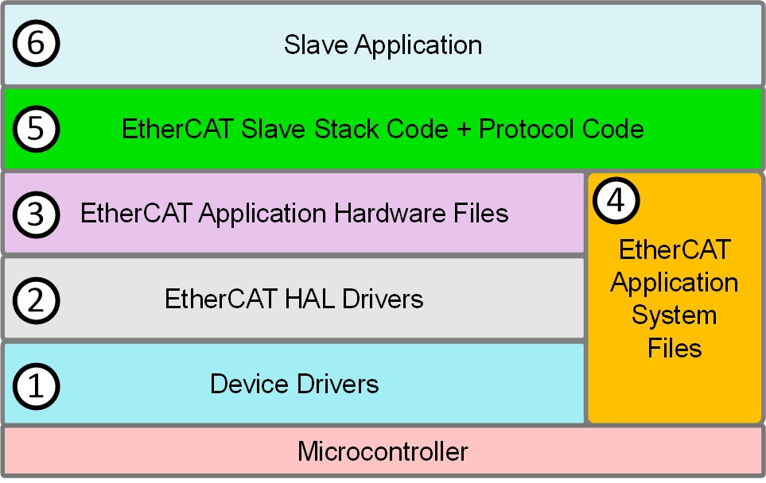
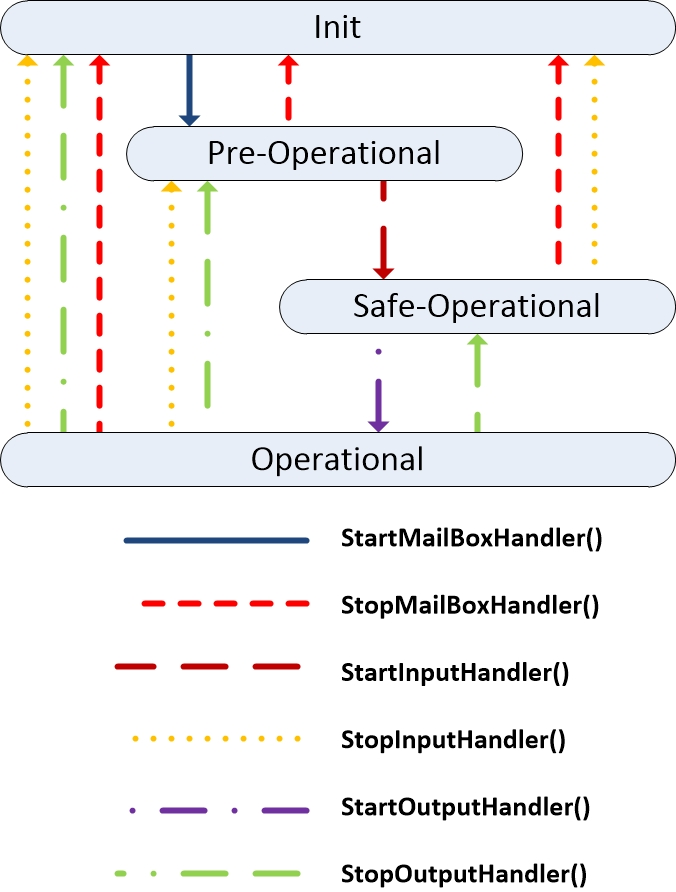
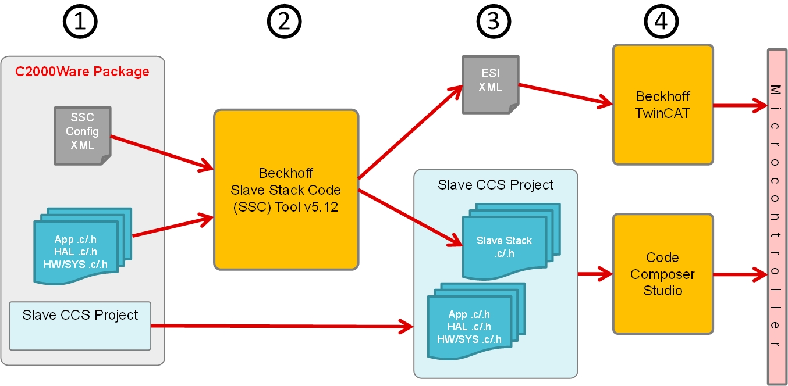

EtherCAT SubordinateDevice Controller software development involves understanding the data flow of a complete system application, familiarizing with the EtherCAT application stack, and knowing how the EtherCAT MainDevice/SubordinateDevice interact. This chapter includes the following:
EtherCAT Application Software Stack
This section details the various EtherCAT SubordinateDevice application stack layers. The figure below displays the layers from MCU to application.

EtherCAT Application Stack
- Layer 1:
- There are the specific microcontroller drivers
- Such drivers include the system control, EtherCAT subsystem, etc
- Layer 2:
- EtherCAT device-specific SubordinateDevice hardware abstraction layer (HAL) drivers
- These API requirements are defined by the Beckhoff SubordinateDevice Implementation specification
- API functions include EtherCAT hardware initialization, reading/writing to EtherCAT registers/memory, etc
- Layer 3:
- Application device-specific hardware header files to map HAL driver APIs to Beckhoff SubordinateDevice stack API naming and usage scheme
- Layer 4:
- Device-specific application system wrapper APIs
- Includes wrapper functions for APIs such as memcpy, memset, etc
- For CPU1, these are primarily necessary to handle word to byte conversations
- Layer 5:
- The Beckhoff EtherCAT SubordinateDevice stack code developed and provided by Beckhoff
- The EtherCAT SubordinateDevice stack code includes the EtherCAT SubordinateDevice state machine
- Additionally, the stack code includes the supported EtherCAT protocol code (CAN over EtherCAT, Ethernet over EtherCAT, etc)
- These files are generated from the Beckhoff SubordinateDevice Stack Code (SSC) tool
- Layer 6:
- The user SubordinateDevice application
- Includes the main application loop and application required APIs to handle EtherCAT SubordinateDevice state changes. Refer to EtherCAT Software States and Application APIs section for more info on the states.
- Additionally, depending on the EtherCAT protocol, includes defines for that protocol. For example, it defines the object dictionary for the CAN over EtherCAT protocol.
EtherCAT Software States and Application APIs
The EtherCAT SubordinateDevice has 4 main states: Initialization(Init), PreOperational(PreOP), SafeOperational(SafeOP), and Operational(OP). Any EtherCAT SubordinateDevice application requires a set of function handlers that are called by the Beckhoff SubordinateDevice stack state machine. The main EtherCAT application code goes in APPL_Application() which is called by the main EtherCAT loop or SYNC interrupt. Figure below details the various SubordinateDevice software states and the handlers that are called by the stack during those transitions.

EtherCAT Software States
- Init State:
- First state upon EtherCAT initialization
- No communicaton on the applications layer
- EtherCAT MainDevice has access to the datalink information registers
- Transition to PreOP:
- MainDevice requested PreOP state
- SyncManager (SM0, SM1) mailbox settings are checked
- Mailbox SyncManager enabled
- APPL_StartMailBoxHandler() called
- PreOP State:
- Mailbox communicaton on the application layer
- No process data communication
- Transition to SafeOP:
- MainDevice requested SafeOP state
- MainDevice configures application parameters using the mailbox (ex: calculate process data size, setup process data mapping, application specific settings)
- MainDevice configures DL register (process data syncManagers, FMMUs)
- APPL_StartInputHandler() called
- SafeOP State:
- Mailbox communication on the application layer
- Process data communication for inputs only (outputs kept in "safe" state)
- Transition to OP:
- MainDevice requested OP state
- MainDevice sends valid Outputs
- APPL_StartOutputHandler() called
- OP State:
- Process data communication for inputs and outputs
EtherCAT Development Overview
This provides a look at the high level development flow of the steps described in later chapters in this guide. For more specific, step-by-step details, see Getting Started Using Examples Chapter.

EtherCAT Development Flow
- Download C2000Ware and familiarize with the EtherCAT collateral provided
- SSC Configuration XML (f29h85x_ssc_config.xml): A file to import into the SSC tool to be able to generate F29H85x CPU1 specific SubordinateDevice stack files.
- Note
- SSC configuration xml file is not required for f29h85x_cpu1_pdi_hal_test_app example.
- Application files (main example code, EtherCAT HAL drivers, EtherCAT device system files): Files required for the examples as well as interfacing with the SubordinateDevice stack code files
- SubordinateDevice CCS Projects: CCS example projects for F29H85x.
- Using the SubordinateDevice stack code (SSC) tool
- Beckhoff EtherCAT SubordinateDevice stack code is not provided in C2000Ware, requires generation from the SSC tool
- The SSC tool configurations for F29H85x are setup via importing the SSC configuration XML
- Upon importing, users can select between generating SubordinateDevice stack code for F29H65x CPU1
- Understanding the SSC generated files
- The SSC generates the device configured SubordinateDevice stack code files which get imported as part of the SubordinateDevice CCS example projects
- The SSC generates the ESI (EtherCAT SubordinateDevice Information) XML file. This file is provided to the EtherCAT MainDevice to be used to program the EtherCAT SubordinateDevice EEPROM as well as for the MainDevice to understand the capabilities of that particular EtherCAT SubordinateDevice.
- Running EtherCAT MainDevice and programming the MCU
- Once the EtherCAT SubordinateDevice example project (which now includes the EtherCAT SubordinateDevice stack files) is imported and built in CCS, this gets loaded and ran on the F29H85x .
- After providing the ESI file to the EtherCAT MainDevice, such as Beckhoff TwinCAT, the EtherCAT MainDevice is used to program the EtherCAT SubordinateDevice EEPROM. Once EEPROM is valid, EtherCAT MainDevice can begin the process of requesting the EtherCAT SubordinateDevice to reach operational mode.
 1.9.1
1.9.1